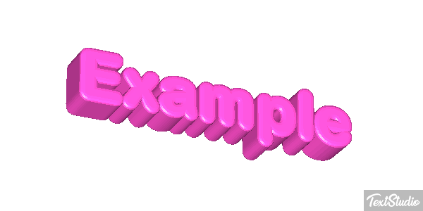

You can move around with [WASD]. Be careful in the water, you are slow!
To shoot, all you have to do is click there.
You can use your sabre or pistol for different situations. Switch between them with [e].
Enemies you kill also drop loot like water or coins or barrels [this depends on the enemy type] that can be useful later.
Your weapons also have special water attacks that you can use with [right-click]. Your pistol can also be used as a water pistol which increases the rate of fire extremely but reduces the damage and firing speed somewhat. Your sword can influence the state of the water in the blood and freeze enemies. However, these attacks consume water that has to be replenished. Also: some attacks have to be found first.
You can also find other talents.
Water has another aggregate state: you can turn yourself into water vapor for a short time and thus become invisible to your opponents. Use that talent with [q]
All these abilities come from the water civilization. We were able to steal a few when we invaded their city. But they have hidden a few others on the island. These are hidden in chests and the lock can be cracked by [attacking] with our sabre. The water civilization has already thought of this and turned some of them into mimics. So better watch out and think twice whether you can afford it in this situation
If all that fails, we are still a damn good pirate captain.
We can place barrels [space] full of gunpowder and blow them up together with the enemy when we attack them
Why should opponents drop coins if we can't even spend them?
Ahh right, there is one, run to it and press [f] to buy upgrades. You can also buy parts for your getaway boat, so weigh up whether it's currently better to get stronger or prepare to flee.
You can assemble the getaway boat from parts in the store, just [buy] the corresponding item in the store and assemble it dynamically.